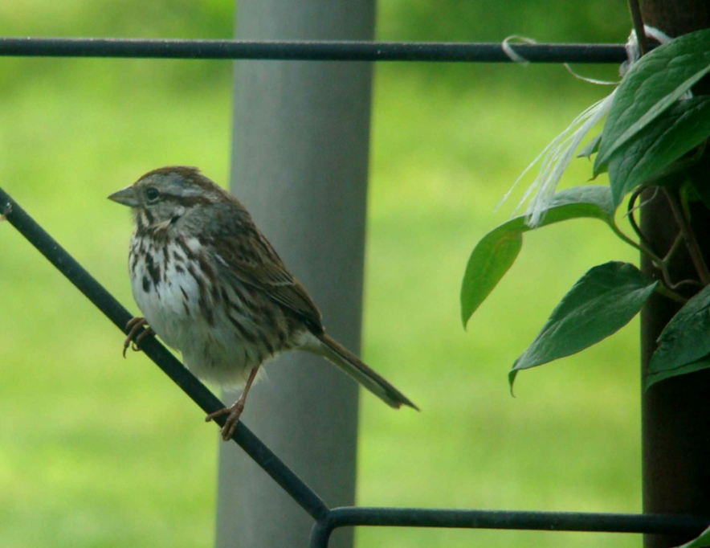
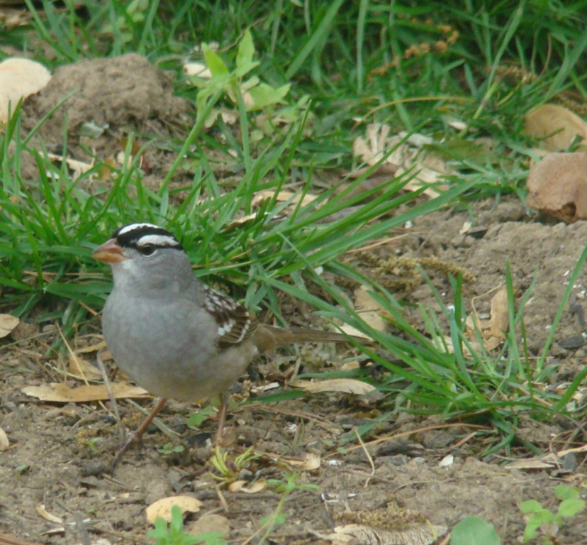

I must say a word about the maligned “sparrows.” Most sparrows are a delight to see and watch for. In the spring you may see both the white-throated and the white-crowned sparrow. They are similar but distinctive markings are bright enough to be spotted to tell them apart. They scratch around in leaves.
The song sparrow is a year-round resident in Indiana.
The white-throated sparrow has a white throat and yellow dots in front of the eyes.
It has a delightful song variously described as, “Old Sam Peabody Peabody, Peabody” and “sweet sweet Canada Canada Canada.” In Maine I called it the “telegraph bird” from its “dit-dah” kind of song.
The white-crowned sparrow has a boldly streaked black and white head and a pink-orange bill.
Its song is comprised of whistled notes and a trill and varies.
The song sparrow stays with us during the winter here in Indiana. It is a perky, spunky little thing that takes no nonsense from other birds. In spring he is quite vocal. In summer it loves to splash in the birdbaths. The song sparrow has a central spot on a streaked breast.
Its song is described as a few repeated notes followed by a warble. It will also utter a “tsip” and “tchump.”
There are other sparrows that you may see less often, among them the tree sparrow with his chestnut head, and the fox sparrow, a bigger bird – 7 inches – darker striped. It scratches vigorously in leaves.
